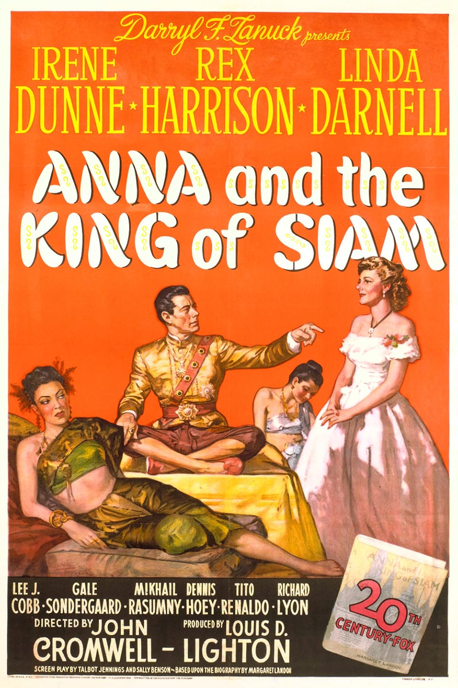

Anna and the King of Siam
19th Academy Awards
(Oscars 1947)
5 Nominations, 2 Awards
| Nominations | ||
|---|---|---|
| Category | Nominees | Result |
| Actress in a Supporting Role | Gale Sondergaard | Nominated |
| Writing (Screenplay) | Sally Benson and Talbot Jennings | Nominated |
| Cinematography (Black-and-White) | Arthur Miller | Won |
| Art Direction (Black-and-White) | Frank E. Hughes, Lyle Wheeler, Thomas Little, and William Darling | Won |
| Music (Music Score of a Dramatic or Comedy Picture) | Bernard Herrmann | Nominated |